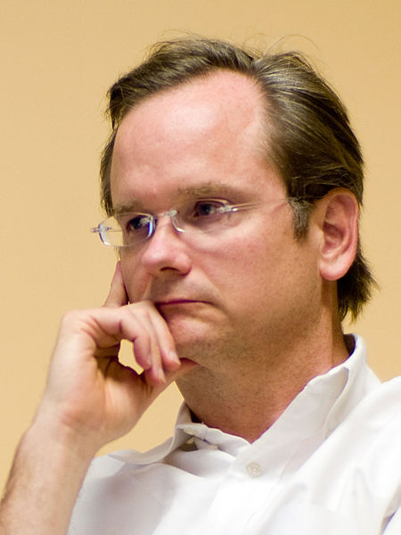
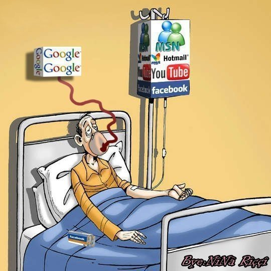

privacidade: [...] representa a
vida particular de uma pessoa.
[...] sinônimos: [...] intimidade, particularidade,
pessoalidade, privatividade - Houaiss
Privacidade na era digital
O "BOOM" com as revelações de Snowden
Muito antes de Snowden

1999
a nova arquitetura da Internet
já está sendo traçada por empresas
norte-americanas com a ajuda silenciosa e protecionista do governo
dos Estados Unidos - em prejuízo do usuário comum e de outros países.
2004
Lessig alerta para o que está ocorrendo no governo norte-americano: pressionado pelo lobby do
comércio, tem legislado sobre as leis de software, tornando as regras de direitos autorais e patentes muito mais duras do que no mundo real, além de não coibir a invasão de privacidade.
Centralização
O modelo atual da internet, centralizado, as informações de todos os usuários se encontram em um único lugar, e isso acarreta no controle de todas nossas experiências, como no caso do Facebook.
Privacidade na Internet: estamos perdendo essa batalha?
Não há como negar o apetite insaciável das empresas por mais e mais informações sobre os usuários da Internet, isto porque as possibilidades financeiras são muito grandes nesse segmento.

“Existe o desejo de colher toda informação possível do usuário, cada item, por menor que seja. Contudo, é preciso que o usuário saiba que tipo de informação você está colhendo. É preciso ser transparente — a menor dissimulação pode acabar em desastre.”
O verdadeiro Big Brother
Os Estados Unidos são o Big Brother da vida real. A maioria das fibras óticas, que carregam as informações que trafegam pelo mundo todo, passa pelo país americano. E se não passam, são interceptadas por submarinos americanos. A inteligência dos Estados Unidos teria acesso, portanto, a dados de todas as pessoas do mundo.
A solução: Software Livre
Software Livre são ferramentas abertas que podem ser usadas para qualquer propósito. Além disso, seu código-fonte é aberto para ser estudado e adaptado, se necessário, às necessidades dos usuários.